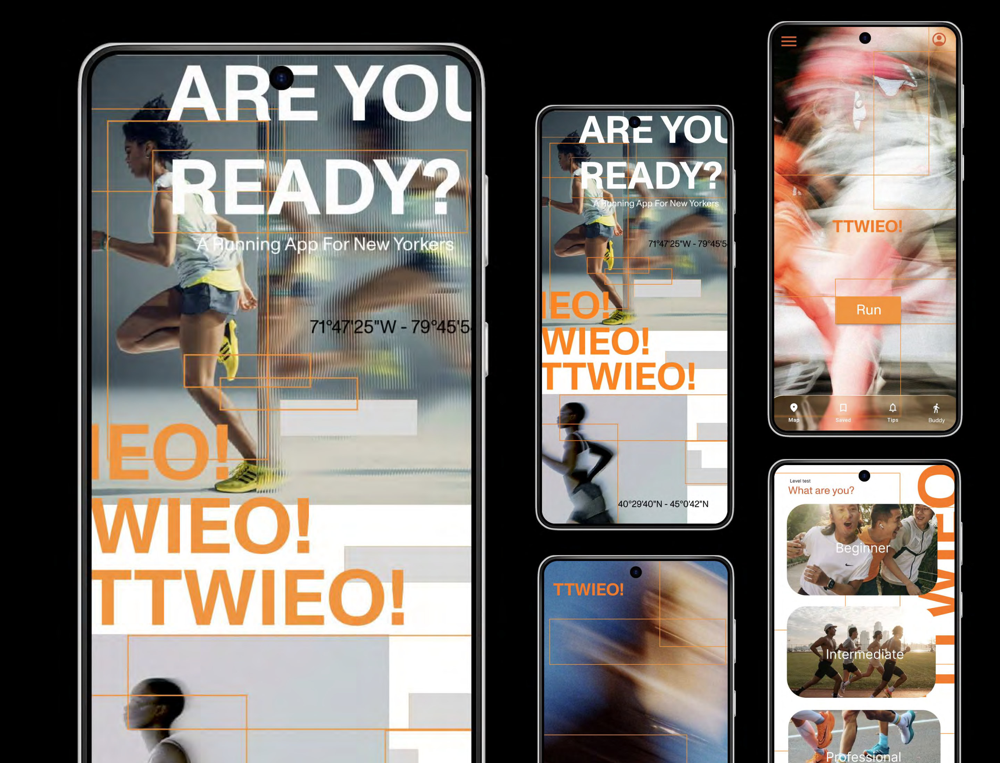
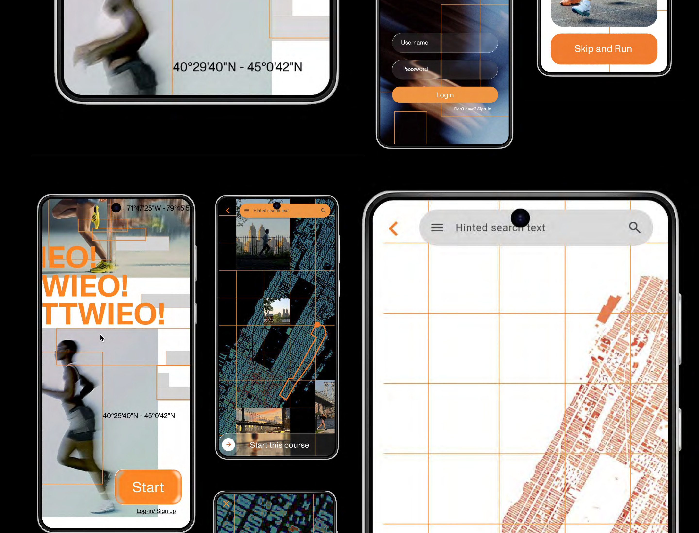
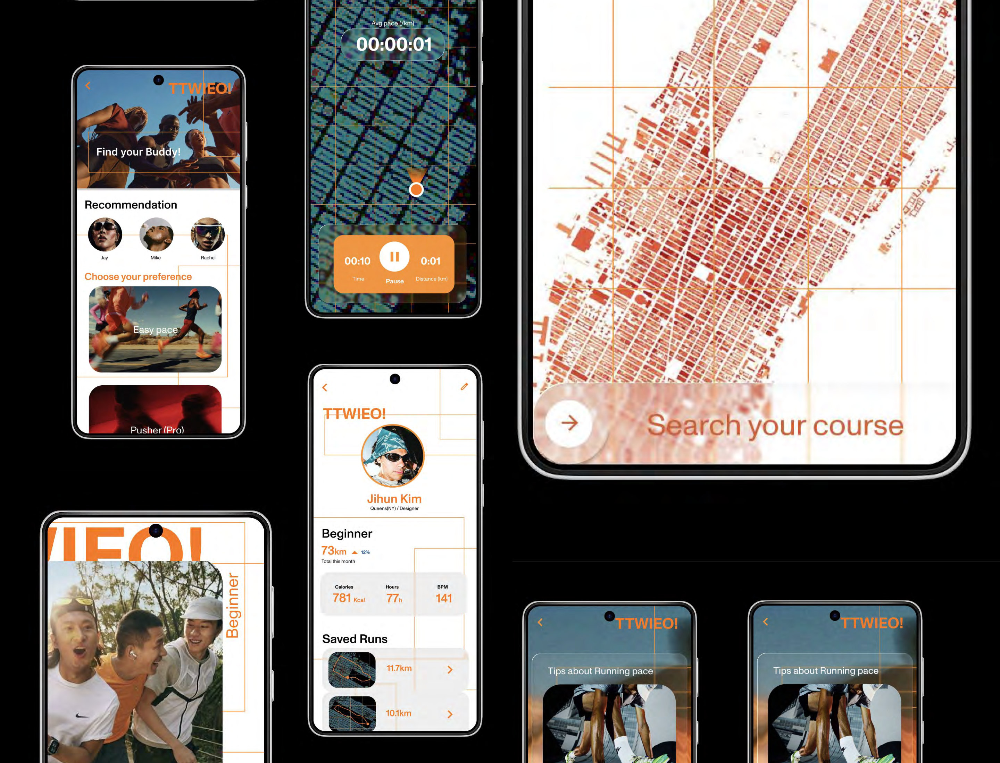
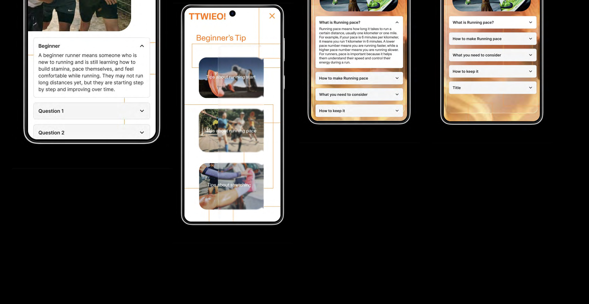

As a runner in New York, I noticed that many beginners feel intimidated by running and that existing apps often prioritize experienced users. This inspired me to create a beginner-focused UI/UX design for a running app that helps users track progress, set realistic goals, and stay motivated through a clear and accessible interface. The project emphasizes user flow, usability, and practical information based on my own running experience.



